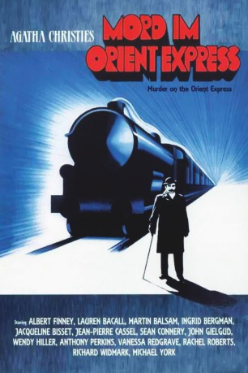

#7538 Mord im Orient-Express
Alternativ: Murder on the Orient Express
Auszeichnungen: 1 Oscars gewonnen für 5 Oscars nominiert 3 BAFTA-Awards gewonnen
 
 IMDB-Wertung: 7.3 / 10
IMDB-Wertung: 7.3 / 10  Metascore: 0
Metascore: 0 
Britischer starbesetzer Thriller von Sidney Lumet aus dem Jahre 1974 nach dem gleichnamigen Roman von Agatha Christie. Hercule Poirot steht vor einem seiner schwierigsten Fälle: In einer eisigen Winternacht muss der Orient Express nach Istanbul anhalten und am nächsten Morgen wird die Leiche eines mit 12 Messerstichen ermordeten Multimillionärs aufgefunden.
Jahr: 1974
Dauer: 127 Minuten
FSK: 12
Land: England Studio: GloriaTonspuren:
Untertitel: Deutsch, Englisch,
Auflösung: 1080p (1836x1080) Größe: 10444 MB
Genre: Drama, Krimi, Mystery
Regisseur:  Sidney Lumet
Sidney Lumet
Drehbuch: Paul Dehn
Soundtrack:
Darsteller:
Datei: X:\Person\Agatha Christie\Mord im Orient-Express (1974, FSK12, 1836x1080).mkv seit 20.11.2017
Festplatte: HD Collection-7+mehr(A-Z)+Person
 Es gibt insgesamt 12 Filme in der Gruppe 'Person\Agatha Christie'
Es gibt insgesamt 12 Filme in der Gruppe 'Person\Agatha Christie'